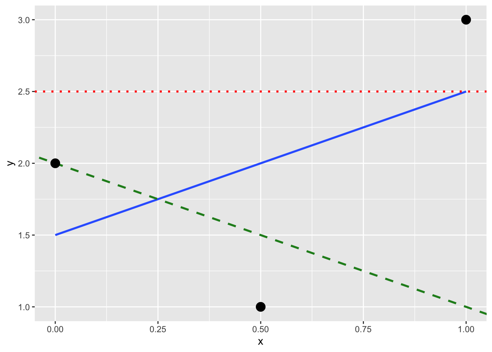

Repeat the earlier installation steps, but for the dplyr, nycflights13, and knitr packages. This will install the earlier mentioned dplyr package for data wrangling, the nycflights13 package containing data on all domestic flights leaving a NYC airport in 2013, and the knitr package for generating easy-to-read tables in R. We’ll use these packages in the next section.
LC 1.2 Block 1 Day 1
“Load” the dplyr, nycflights13, and knitr packages as well by repeating the earlier steps.
Run View(flights) in your console in RStudio, either by typing it or cutting-and-pasting it into the console pane. Explore this data frame in the resulting pop up viewer. You should get into the habit of viewing any data frames you encounter. Note the uppercase V in View(). R is case-sensitive, so you’ll get an error message if you run view(flights) instead of View(flights)
LC 1.3 Block 1 Day 1
What does any ONE row in this flights dataset refer to?
A. Data on an airline
B. Data on a flight
C. Data on an airport
D. Data on multiple flights
LC 1.4 Block 1 Day 1
What are some other examples in this dataset (flights) of categorical variables? What makes them different than quantitative variables?
LC 1.5 Block 1 Day 1
What properties of each airport do the variables lat, lon, alt, tz, dst, and tzone describe in the airports data frame? Take your best guess.
LC 1.6 Block 1 Day 1
Provide the names of variables in a data frame with at least three variables where one of them is an identification variable and the other two are not. Further, create your own tidy data frame that matches these conditions.
LC 1.7 Block 1 Day 1
Look at the help file for the airports data frame. Revise your earlier guesses about what the variables lat, lon, alt, tz, dst, and tzone each describe.
Chapter 2: Visualization
LC 2.1 Block 1 Day 2
Take a look at both the flights and alaska_flights data frames by running View(flights) and View(alaska_flights). In what respect do these data frames differ? For example, think about the number of rows in each dataset.
LC 2.2-2.6 Block 1 Day 2
What are some practical reasons why dep_delay and arr_delay have a positive relationship?
What variables in the weather data frame would you expect to have a negative correlation (i.e., a negative relationship) with dep_delay? Why? Remember that we are focusing on numerical variables here. Hint: Explore the weather dataset by using the View() function.
Why do you believe there is a cluster of points near (0, 0)? What does (0, 0) correspond to in terms of the Alaska Air flights?
What are some other features of the plot that stand out to you?
Create a new scatterplot using different variables in the alaska_flights data frame by modifying the example given.
LC 2.7-2.8 Block 1 Day 2
Why is setting the alpha argument value useful with scatterplots? What further information does it give you that a regular scatterplot cannot?
After viewing Figure @ref(fig:alpha), give an approximate range of arrival delays and departure delays that occur most frequently. How has that region changed compared to when you observed the same plot without alpha = 0.2 set in Figure @ref(fig:noalpha)?
LC 2.9-2.10 Block 1 Day 3
LC 2.9 Take a look at both the weather and early_january_weather data frames by running View(weather) and View(early_january_weather). In what respect do these data frames differ?
LC 2.10View() the flights data frame again. Why does the time_hour variable uniquely identify the hour of the measurement, whereas the hour variable does not?
LC 2.11-2.13 Block 1 Day 3
LC 2.11 Why should linegraphs be avoided when there is not a clear ordering of the horizontal axis?
LC 2.12 Why are linegraphs frequently used when time is the explanatory variable on the x-axis?
LC 2.12 Plot a time series of a variable other than temp for Newark Airport in the first 15 days of January 2013.
LC 2.18-2.21 Block 1 Day 3
What other things do you notice about this faceted plot? How does a faceted plot help us see relationships between two variables?
What do the numbers 1-12 correspond to in the plot? What about 25, 50, 75, 100?
For which types of datasets would faceted plots not work well in comparing relationships between variables? Give an example describing the nature of these variables and other important characteristics.
LC 2.21 Does the temp variable in the weather dataset have a lot of variability? Why do you say that?
LC 2.22-2.25 Boxplots Block 1 Day 4
LC 2.22 What does the dot at the bottom of the plot for May correspond to? Explain what might have occurred in May to produce this point.
LC 2.23 Which months have the highest variability in temperature? What reasons can you give for this?
LC 2.24 We looked at the distribution of the numerical variable temp split by the numerical variable month that we converted using the factor() function in order to make a side-by-side boxplot. Why would a boxplot of temp split by the numerical variable pressure similarly converted to a categorical variable using the factor() not be informative?
LC 2.25 Boxplots provide a simple way to identify outliers. Why may outliers be easier to identify when looking at a boxplot instead of a faceted histogram?
LC 2.26-2.29 Histograms Block 1 Day 4
LC 2.26 Why are histograms inappropriate for categorical variables?
LC 2.27 What is the difference between histograms and barplots?
LC 2.28 How many Envoy Air flights departed NYC in 2013?
LC 2.29 What was the 7th highest airline for departed flights from NYC in 2013? How could we better present the table to get this answer quickly?
LC 2.30-2.31 Pie charts Block 1 Day 4
LC 2.30 Why should pie charts be avoided and replaced by barplots?
LC 2.31 Why do you think people continue to use pie charts?
LC 2.32-2.37 Block 1 Day 4
LC 2.32 What kinds of questions are not easily answered by looking at Figure @ref(fig:flights-stacked-bar) (2.23)?
LC 2.33 What can you say, if anything, about the relationship between airline and airport in NYC in 2013 in regards to the number of departing flights?
LC 2.34 Why might the side-by-side barplot be preferable to a stacked barplot in this case?
LC 2.35 What are the disadvantages of using a dodged barplot, in general?
LC 2.36 Why is the faceted barplot preferred to the side-by-side and stacked barplots in this case?
LC 2.37 What information about the different carriers at different airports is more easily seen in the faceted barplot?
Chapter 3: Wrangling
LC 3.1 Block 1 Day 5
What’s another way of using the “not” operator ! to filter only the rows that are not going to Burlington, VT nor Seattle, WA in the flights data frame? Test this out using the previous code.
LC 3.2 Block 1 Day 5
Say a doctor is studying the effect of smoking on lung cancer for a large number of patients who have records measured at five-year intervals. She notices that a large number of patients have missing data points because the patient has died, so she chooses to ignore these patients in her analysis. What is wrong with this doctor’s approach?
LC 3.3 Block 1 Day 5
Modify the earlier summarize() function code that creates the summary_temp data frame to also use the n() summary function: summarize(... , count = n()). What does the returned value correspond to?
LC 3.4 Block 1 Day 5
Why doesn’t the following code work? Run the code line-by-line instead of all at once, and then look at the data. In other words, run summary_temp <- weather %>% summarize(mean = mean(temp, na.rm = TRUE)) first.
Recall from Chapter @ref(viz) when we looked at temperatures by months in NYC. What does the standard deviation column in the summary_monthly_temp data frame tell us about temperatures in NYC throughout the year?
LC 3.6 Block 1 Day 6
What code would be required to get the mean and standard deviation temperature for each day in 2013 for NYC?
LC 3.7 Block 1 Day 6
Recreate by_monthly_origin, but instead of grouping via group_by(origin, month), group variables in a different order group_by(month, origin). What differs in the resulting dataset?
LC 3.8 Block 1 Day 6
How could we identify how many flights left each of the three airports for each carrier?
LC 3.9 Block 1 Day 6
How does the filter() operation differ from a group_by() followed by a summarize()?
LC 3.10 Block 1 Day 6
What do positive values of the gain variable in flights correspond to? What about negative values? And what about a zero value?
LC 3.11 Block 1 Day 6
Could we create the dep_delay and arr_delay columns by simply subtracting dep_time from sched_dep_time and similarly for arrivals? Try the code out and explain any differences between the result and what actually appears in flights.
LC 3.12 Block 1 Day 76
What can we say about the distribution of gain? Describe it in a few sentences using the plot and the gain_summary data frame values.
LC 3.13 Block 1 Day 7
Looking at Figure @ref(fig:reldiagram), when joining flights and weather (or, in other words, matching the hourly weather values with each flight), why do we need to join by all of year, month, day, hour, and origin, and not just hour?
LC 3.14 Block 1 Day 7
What surprises you about the top 10 destinations from NYC in 2013?
LC 3.15 Block 1 Day 7
What are some advantages of data in normal forms? What are some disadvantages?
LC 3.16 Block 1 Day 7
What are some ways to select all three of the dest, air_time, and distance variables from flights? Give the code showing how to do this in at least three different ways.
LC 3.17 Block 1 Day 7
How could one use starts_with(), ends_with(), and contains() to select columns from the flights data frame? Provide three different examples in total: one for starts_with(), one for ends_with(), and one for contains().
LC 3.18 Block 1 Day 7
Why might we want to use the select function on a data frame?
LC 3.19 Block 1 Day 7
Create a new data frame that shows the top 5 airports with the largest arrival delays from NYC in 2013.
::: {.callout-note icon=false} ## LC 3.20 Block 1 Day 7 Let’s now put your newly acquired data wrangling skills to the test!
An airline industry measure of a passenger airline’s capacity is the available seat miles, which is equal to the number of seats available multiplied by the number of miles or kilometers flown summed over all flights.
For example, let’s consider the scenario in Figure 1. Since the airplane has 4 seats and it travels 200 miles, the available seat miles are \(4 \times 200 = 800\).
Figure 1: Example of available seat miles for one flight.
Extending this idea, let’s say an airline had 2 flights using a plane with 10 seats that flew 500 miles and 3 flights using a plane with 20 seats that flew 1000 miles, the available seat miles would be \(2 \times 10 \times 500 + 3 \times 20 \times 1000 = 70,000\) seat miles.
Using the datasets included in the nycflights13 package, compute the available seat miles for each airline sorted in descending order. After completing all the necessary data wrangling steps, the resulting data frame should have 16 rows (one for each airline) and 2 columns (airline name and available seat miles). Here are some hints:
Crucial: Unless you are very confident in what you are doing, it is worthwhile not starting to code right away. Rather, first sketch out on paper all the necessary data wrangling steps not using exact code, but rather high-level pseudocode that is informal yet detailed enough to articulate what you are doing. This way you won’t confuse what you are trying to do (the algorithm) with how you are going to do it (writing dplyr code).
Take a close look at all the datasets using the View() function: flights, weather, planes, airports, and airlines to identify which variables are necessary to compute available seat miles.
Figure @ref(fig:reldiagram) showing how the various datasets can be joined will also be useful.
Consider the data wrangling verbs in Table @ref(tab:wrangle-summary-table) as your toolbox! ::
Chapter 4: Tidy
::: {.callout-note icon=false} ## LC 4.1 Block 1 Day 8 What are common characteristics of “tidy” data frames? ::
::: {.callout-note icon=false} ## LC 4.2 Block 1 Day 8 What makes “tidy” data frames useful for organizing data? ::
::: {.callout-note icon=false} ## LC 4.3 Block 1 Day 8 Take a look at the airline_safety data frame included in the fivethirtyeight data package. Run the following:
airline_safety
After reading the help file by running ?airline_safety, we see that airline_safety is a data frame containing information on different airline companies’ safety records. This data was originally reported on the data journalism website, FiveThirtyEight.com, in Nate Silver’s article, “Should Travelers Avoid Flying Airlines That Have Had Crashes in the Past?”. Let’s only consider the variables airlines and those relating to fatalities for simplicity:
# A tibble: 56 × 3
airline fatalities_85_99 fatalities_00_14
<chr> <int> <int>
1 Aer Lingus 0 0
2 Aeroflot 128 88
3 Aerolineas Argentinas 0 0
4 Aeromexico 64 0
5 Air Canada 0 0
6 Air France 79 337
7 Air India 329 158
8 Air New Zealand 0 7
9 Alaska Airlines 0 88
10 Alitalia 50 0
# … with 46 more rows
This data frame is not in “tidy” format. How would you convert this data frame to be in “tidy” format, in particular so that it has a variable fatalities_years indicating the incident year and a variable count of the fatality counts? ::
::: {.callout-note icon=false} ## LC 4.4 Block 1 Day 9 Convert the dem_score data frame into a “tidy” data frame and assign the name of dem_score_tidy to the resulting long-formatted data frame. ::
::: {.callout-note icon=false} ## LC 4.5 Block 1 Day 9 Read in the life expectancy data stored at https://moderndive.com/data/le_mess.csv and convert it to a “tidy” data frame. ::
Chapter 5: Regression
LC 5.1 Block 2 Day 1
Conduct a new exploratory data analysis with the same outcome variable \(y\) being score but with age as the new explanatory variable \(x\). Remember, this involves three things:
Looking at the raw data values.
Computing summary statistics.
Creating data visualizations.
What can you say about the relationship between age and teaching scores based on this exploration?
LC 5.2 Block 2 Day 1
Fit a new simple linear regression using lm(score ~ age, data = evals_ch5) where age is the new explanatory variable \(x\). Get information about the “best-fitting” line from the regression table by applying the get_regression_table() function. How do the regression results match up with the results from your earlier exploratory data analysis?
LC 5.3 Block 2 Day 1
Generate a data frame of the residuals of the model where you used age as the explanatory \(x\) variable.
LC 5.4 Block 2 Day 2
Conduct a new exploratory data analysis with the same explanatory variable \(x\) being continent but with gdpPercap as the new outcome variable \(y\). What can you say about the differences in GDP per capita between continents based on this exploration?
LC 5.5 Block 2 Day 2
Fit a new linear regression using lm(gdpPercap ~ continent, data = gapminder2007) where gdpPercap is the new outcome variable \(y\). Get information about the “best-fitting” line from the regression table by applying the get_regression_table() function. How do the regression results match up with the results from your previous exploratory data analysis?
LC 5.6 Block 2 Day 2
Using either the sorting functionality of RStudio’s spreadsheet viewer or using the data wrangling tools you learned in Chapter @ref(wrangling), identify the five countries with the five smallest (most negative) residuals? What do these negative residuals say about their life expectancy relative to their continents’ life expectancy?
LC 5.7 Block 2 Day 2
Repeat this process, but identify the five countries with the five largest (most positive) residuals. What do these positive residuals say about their life expectancy relative to their continents’ life expectancy?
LC 5.8 Block 2 Day 3
Note in Figure @fig:three-lines there are 3 points marked with dots and:
The “best” fitting solid regression line in blue
An arbitrarily chosen dotted red line
Another arbitrarily chosen dashed green line

Figure 2: Regression line and two others.
Compute the sum of squared residuals by hand for each line and show that of these three lines, the regression line in blue has the smallest value.
Chapter 6: Multiple regression
LC 6.1 Block 2 Day 4
Compute the observed values, fitted values, and residuals not for the interaction model as we just did, but rather for the parallel slopes model we saved in score_model_parallel_slopes.
LC 6.2
Conduct a new exploratory data analysis with the same outcome variable \(y\)debt but with credit_rating and age as the new explanatory variables \(x_1\) and \(x_2\). What can you say about the relationship between a credit card holder’s debt and their credit rating and age?
LC 6.3
Conduct a new exploratory data analysis with the same outcome variable \(y\)debt but with credit_rating and age as the new explanatory variables \(x_1\) and \(x_2\). What can you say about the relationship between a credit card holder’s debt and their credit rating and age?
LC 6.4
Fit a new simple linear regression using lm(debt ~ credit_rating + age, data = credit_ch6) where credit_rating and age are the new numerical explanatory variables \(x_1\) and \(x_2\). Get information about the “best-fitting” regression plane from the regression table by applying the get_regression_table() function. How do the regression results match up with the results from your previous exploratory data analysis?
Chapter 7: Sampling
LC 7.1 Block 3 Day 1
Why was it important to mix the bowl before we sampled the balls?
LC 7.2 Block 3 Day 1
Why is it that our 33 groups of friends did not all have the same numbers of balls that were red out of 50, and hence different proportions red?
LC 7.3 Block 3 Day 1
Why couldn’t we study the effects of sampling variation when we used the virtual shovel only once? Why did we need to take more than one virtual sample (in our case 33 virtual samples)?
LC 7.4 Block 3 Day 1
Why did we not take 1000 “tactile” samples of 50 balls by hand?
LC 7.5 Block 3 Day 1
Looking at Figure @ref(fig:samplingdistribution-virtual-1000), would you say that sampling 50 balls where 30% of them were red is likely or not? What about sampling 50 balls where 10% of them were red?
LC 7.6 Block 3 Day 1
In Figure 7.9, we used shovels to take 1000 samples each, computed the resulting 1000 proportions of the shovel’s balls that were red, and then visualized the distribution of these 1000 proportions in a histogram. We did this for shovels with 25, 50, and 100 slots in them. As the size of the shovels increased, the histograms got narrower. In other words, as the size of the shovels increased from 25 to 50 to 100, did the 1000 proportions
A. vary less,
B. vary by the same amount, or
C. vary more?
LC 7.7 Block 3 Day 1
What summary statistic did we use to quantify how much the 1000 proportions red varied?
A. The interquartile range
B. The standard deviation
C. The range: the largest value minus the smallest.
LC 7.8 Block 3 Day 2
In the case of our bowl activity, what is the population parameter? Do we know its value?
LC 7.9 Block 3 Day 2
What would performing a census in our bowl activity correspond to? Why did we not perform a census?
LC 7.10 Block 3 Day 2
What purpose do point estimates serve in general? What is the name of the point estimate specific to our bowl activity? What is its mathematical notation?
LC 7.11 Block 3 Day 2
How did we ensure that our tactile samples using the shovel were random?
LC 7.12 Block 3 Day 2
Why is it important that sampling be done at random?
LC 7.13 Block 3 Day 2
What are we inferring about the bowl based on the samples using the shovel?
LC 7.14 Block 3 Day 2
What purpose did the sampling distributions serve?
LC 7.15 Block 3 Day 2
What does the standard error of the sample proportion \(\widehat{p}\) quantify?
LC 7.16 Block 3 Day 2
The table that follows is a version of Table @ref(tab:comparing-n-2) matching sample sizes \(n\) to different standard errors of the sample proportion \(\widehat{p}\), but with the rows randomly re-ordered and the sample sizes removed. Fill in the table by matching the correct sample sizes to the correct standard errors.
Standard errors of \(\hat{p}\) based on n = 25, 50, 100
Sample size
Standard error of \(\hat{p}\)
\(n=\)
0.94
\(n=\)
0.45
\(n=\)
0.69
For the following four Learning checks, let the estimate be the sample proportion \(\widehat{p}\): the proportion of a shovel’s balls that were red. It estimates the population proportion \(p\): the proportion of the bowl’s balls that were red.
LC 7.17 Block 3 Day 2
What is the difference between an accurate and a precise estimate?
LC 7.18 Block 3 Day 2
How do we ensure that an estimate is accurate? How do we ensure that an estimate is precise?
LC 7.19 Block 3 Day 2
In a real-life situation, we would not take 1000 different samples to infer about a population, but rather only one. Then, what was the purpose of our exercises where we took 1000 different samples?
LC 7.20 Block 3 Day 2
Figure @ref(fig:accuracy-vs-precision) with the targets shows four combinations of “accurate versus precise” estimates. Draw four corresponding sampling distributions of the sample proportion \(\widehat{p}\), like the one in the leftmost plot in Figure @ref(fig:comparing-sampling-distributions-3).
LC 7.21 Block 3 Day 3
The Royal Air Force wants to study how resistant all their airplanes are to bullets. They study the bullet holes on all the airplanes on the tarmac after an air battle against the Luftwaffe (German Air Force).
LC 7.22 Block 3 Day 3
Imagine it is 1993, a time when almost all households had landlines. You want to know the average number of people in each household in your city. You randomly pick out 500 phone numbers from the phone book and conduct a phone survey.
LC 7.23 Block 3 Day 3
You want to know the prevalence of illegal downloading of TV shows among students at a local college. You get the emails of 100 randomly chosen students and ask them, “How many times did you download a pirated TV show last week?”.
LC 7.24 Block 3 Day 3
A local college administrator wants to know the average income of all graduates in the last 10 years. So they get the records of five randomly chosen graduates, contact them, and obtain their answers.
Chapter 8: Confidence intervals
LC 8.1 Block 3 Day 5
What is the chief difference between a bootstrap distribution and a sampling distribution?
LC 8.2 Block 3 Day 5
Looking at the bootstrap distribution for the sample mean in Figure @ref(fig:one-thousand-sample-means), between what two values would you say most values lie?
LC 8.3 Block 3 Day 6
What condition about the bootstrap distribution must be met for us to be able to construct confidence intervals using the standard error method?
LC 8.4 Block 3 Day 6
Say we wanted to construct a 68% confidence interval instead of a 95% confidence interval for \(\mu\). Describe what changes are needed to make this happen. Hint: we suggest you look at Appendix @ref(appendix-normal-curve) on the normal distribution.
LC 8.5 Block 3 Day 8
Construct a 95% confidence interval for the median year of minting of all US pennies. Use the percentile method and, if appropriate, then use the standard-error method.
Chapter 9: Hypothesis testing
LC 9.1 Block 4 Day 2
Why does the following code produce an error? In other words, what about the response and predictor variables make this not a possible computation with the infer package?
library(moderndive)library(infer)null_distribution_mean <- promotions %>%specify(formula = decision ~ gender, success ="promoted") %>%hypothesize(null ="independence") %>%generate(reps =1000, type ="permute") %>%calculate(stat ="diff in means", order =c("male", "female"))
LC 9.2 Block 4 Day 2
Why are we relatively confident that the distributions of the sample proportions will be good approximations of the population distributions of promotion proportions for the two genders?
LC 9.3 Block 4 Day 2
Using the definition of p-value, write in words what the \(p\)-value represents for the hypothesis test comparing the promotion rates for males and females.
LC 9.4 Block 4 Day 2
Describe in a paragraph how we used Allen Downey’s diagram to conclude if a statistical difference existed between the promotion rate of males and females using this study.
LC 9.5 Block 4 Day 3
What is wrong about saying, “The defendant is innocent.” based on the US system of criminal trials?
LC 9.6 Block 4 Day 3
What is the purpose of hypothesis testing?
LC 9.7 Block 4 Day 3
What are some flaws with hypothesis testing? How could we alleviate them?
LC 9.8 Block 4 Day 3
Consider two \(\alpha\) significance levels of 0.1 and 0.01. Of the two, which would lead to a more liberal hypothesis testing procedure? In other words, one that will, all things being equal, lead to more rejections of the null hypothesis \(H_0\).
LC 9.9
Conduct the same analysis comparing action movies versus romantic movies using the median rating instead of the mean rating. What was different and what was the same?
LC 9.10
What conclusions can you make from viewing the faceted histogram looking at rating versus genre that you couldn’t see when looking at the boxplot?
LC 9.11
Describe in a paragraph how we used Allen Downey’s diagram to conclude if a statistical difference existed between mean movie ratings for action and romance movies.
LC 9.12
Why are we relatively confident that the distributions of the sample ratings will be good approximations of the population distributions of ratings for the two genres?
LC 9.13
Using the definition of \(p\)-value, write in words what the \(p\)-value represents for the hypothesis test comparing the mean rating of romance to action movies.
LC 9.14
What is the value of the \(p\)-value for the hypothesis test comparing the mean rating of romance to action movies?
LC 9.15
Test your data wrangling knowledge and EDA skills:
Use dplyr and tidyr to create the necessary data frame focused on only action and romance movies (but not both) from the movies data frame in the ggplot2movies package.
Make a boxplot and a faceted histogram of this population data comparing ratings of action and romance movies from IMDb.
Discuss how these plots compare to the similar plots produced for the movies_sample data.
Chapter 10: Inference for regression
LC 10.1 Block 4 Day 7
Continuing with our regression using age as the explanatory variable and teaching score as the outcome variable.
Use the get_regression_points() function to get the observed values, fitted values, and residuals for all 463 instructors.
Perform a residual analysis and look for any systematic patterns in the residuals. Ideally, there should be little to no pattern but comment on what you find here.
LC 10.2 Block 4 Day 8
Repeat the inference but this time for the correlation coefficient instead of the slope. Note the implementation of stat = "correlation" in the calculate() function of the infer package.
Chapter 11: Tell your story with data
LC 11.1 Block 4 Day 2
Repeat the regression modeling in Subsection 11.2.3 and the prediction making you just did on the house of condition 5 and size 1900 square feet in Subsection 12.2.4, but using the parallel slopes model you visualized in Figure 11.6. Show that it’s $524,807!
LC 11.2
What date between 1994 and 2003 has the fewest number of births in the US? What story could you tell about why this is the case?